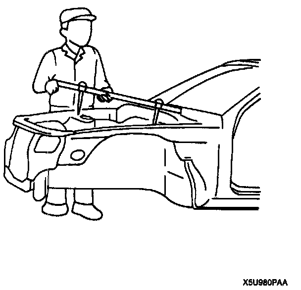
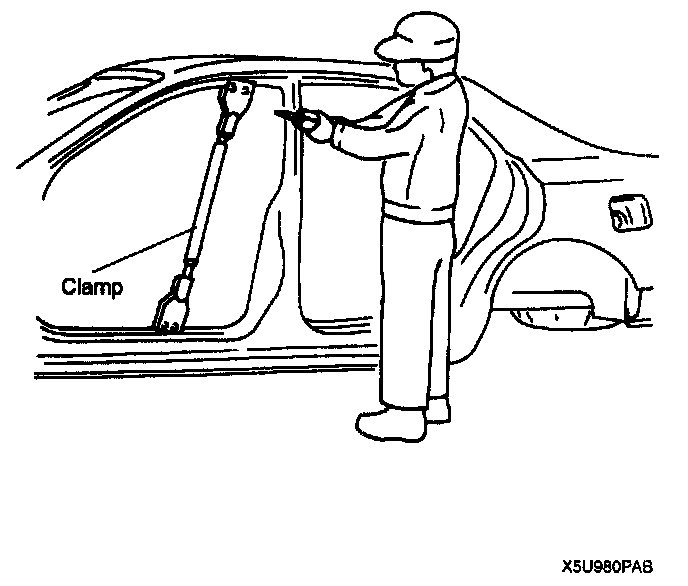
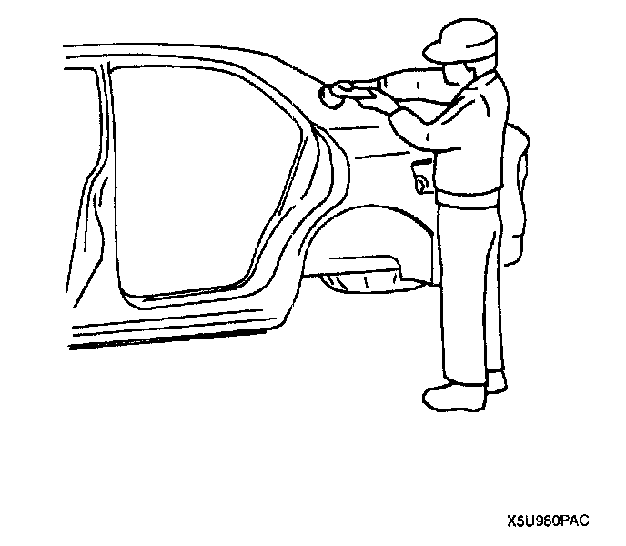
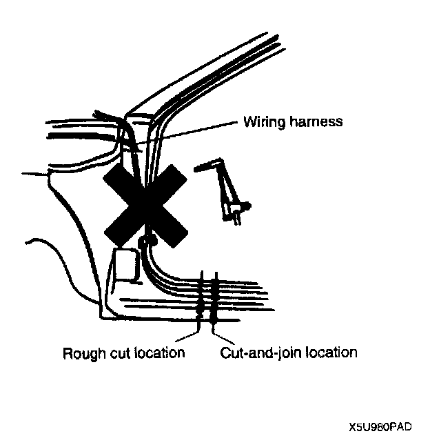

Efficient Removal of Body Panels
EFFICIENT REMOVAL OF BODY PANELSBody Measurements

- Before removal or rough-cutting, first measure the body at and around the damaged area against the standard reference dimension specifications. If there is deformation, use frame repair equipment to make a rough correction.
Prevention of Body Deformation

- Use a clamp or a jack for removal and reinforce at and around the rough-cutting location to prevent deformation of the body.
Selection of Cut-and-join Locations

- For parts where complete replacement is not feasible, careful cutting and joining operations should be followed. If the location to be cut is a flat area where there is no reinforcement, the selected cutting location should be where the welding distortion will be minimum.
Remove of Associated Parts
- Protect moldings, garnishes, and ornaments with tape when removing associated parts.
Rough-cutting of Damaged Panel

- Verify that there are no parts (such as pipes, hoses, and wiring harness) nearby or on the opposite side of a panel which could be damaged by heat.
- For cut-and-join areas, allow for an overlap of 30-50 mm (1.18-1.97 in) and then rough-cut the damaged panel.